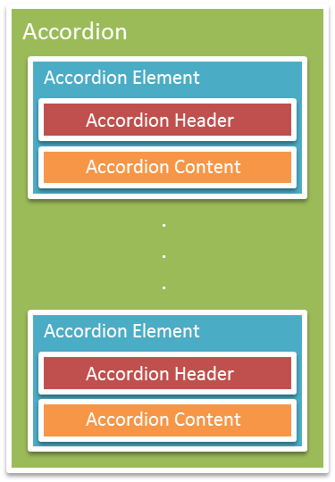

jquery.mobile.hwaccordion
Smooth 3D Animated accordion implemented as a JQM widget.
DOM structure:

Example:
<div data-role="hwaccordion">
<div data-role="accordion-element">
<div data-role="accordion-header">
<span>Element 1</span>
</div>
<div data-role="accordion-content">
<p>Content 1</p>
</div>
</div>
<div data-role="accordion-element">
<div data-role="accordion-header">
<span>Element 2</span>
</div>
<div data-role="accordion-content">
<p>Content 2</p>
</div>
</div>
</div>
See a live example
Options
Auto-scrolling
On opening accordion will scroll to show its content.
<div data-role="hwaccordion" data-auto-scroll="true">
Disable inputs on close
All the input fields inside a closed accordion content will be disabled.
<div data-role="hwaccordion" data-disable-input-on-close="true">
Radio Mode
Only one accordion element at a time will be opened.
<div data-role="hwaccordion" data-radio-mode="true">
Icons
<div id="accordion1" data-role="hwaccordion" data-icon-opened="arrow-u" data-icon-closed="arrow-d">
Methods
Open
hwaccordion("open", accordionIndex) opens an accordion element with index accordionIndex
$('#accordion1').hwaccordion("open",0);
Close
hwaccordion("close", accordionIndex) closes an accordion element with index accordionIndex
$('#accordion1').hwaccordion("close",0);
Refresh
hwaccordion("refresh") does what it seems to do.
$('#accordion1').append('<div data-role="accordion-element"><div data-role="accordion-header"><span>Element 3</span></div><div data-role="accordion-content"><div data-role="button">Pulsante 1</div><div data-role="button">Pulsante 2</div></div></div></div>').hwaccordion("refresh");